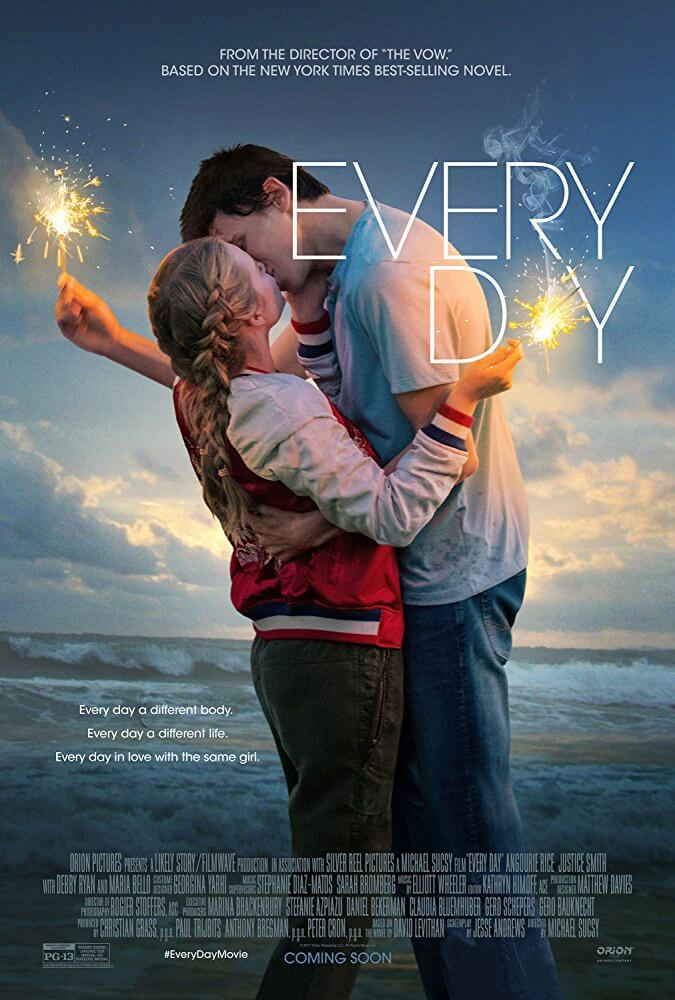

У полоні стихії
- Назва: У полоні стихії / Adrift
- Режисер: Бальтазар Кормакур
- Актори: Шейлін Вудлі, Сем Клафлін, Ґрейс Палмер, Джеффрі Томас, Елізабет Готорн, Тамі Ешкрафт, Каел Дамламіен, Сіале Тунока, Луна Кемпбелл, Зак Бересфорд
- Студія: Lakeshore Entertainment, STX Entertainment
- Бюджет: 35 млн. дол. США
- Прем’єра: 31.05.2018
- Тривалість: 96 хв
Опис:
Дві волелюбні душі рано чи пізно повинні були зійтися разом. Так і сталося – на Таїті зустрілися Тамі Олдхем і Річард Шарп. Вони дуже люблять подорожувати, особливо морем. А ще більше вони люблять одне одного. Один багач запропонував їм доставити за сотні миль елітну яхту з Таїті в Сан-Дієго. Це повинна бути відмінна поїздка, хоч і трохи складна через відстані. Але вони не врахували однієї обставини – насувається ураган 5-го рівня. Їм не те що зберегти яхту – вижити буде складно. І навіть якщо вони залишаться цілими, не факт, що хтось знайде маленьку яхту серед просторів Тихого океану.
Кожен новий день

- Назва: Кожен новий день / Every Day
- Режисер: Майкл Саксі
- Актори: Ангурі Райс, Джастіс Сміт, Джейкоб Баталон, Лукас Джейд Зуманн, Марія Белло, Оуен Тіг, Деббі Раян, Дженні Росс, Колін Форд, Карена Еванс
- Студія: Metro-Goldwyn-Mayer
- Прем’єра: 23.02.2018
- Тривалість: 95 хв
- Назва: Підстава / Set It Up
- Режисер: Клер Скенлон
- Актори: Зої Дойч, Люсі Лью, Глен Пауелл, Тей Діггз, Джон Рудницький, Тітус Берджесс, Мередіт Хагнер, Доріс МакКарті
- Студія: Treehouse Pictures, Netflix
- Прем’єра: 12.06.2018
- Тривалість: 105 хв
Опис:
Що якщо кожен день проживати нове життя? Прокидатися в новому тілі, знаходити нових друзів, нові знайомства? Він щоранку бачить нові обличчя, сім'ї, будинку, намагаючись гідно прожити день за нову людину. Він – це привид, дух, який усе бачить очима інших. Кожен день не схожий на попередній, він не буває двічі в одному тілі. Але він може закохатися. Так і сталося у нього з шістнадцятирічною Ріаннон. Тепер привид знаходить дівчину кожен день, адже він переселяється в людей, які знаходяться досить близько. Але так не може тривати вічно...
Підстава
Опис:
Події стрічки будуть обертатися навколо двох асистентів, що замишляють підступний план, щоб змусити своїх нестерпних босів зустрічатися. Рік - вкрай агресивний керівник, який домігся завдяки своєму характеру успіхів в бізнесі, але й стає через це нестерпним по відношенню до підлеглих.